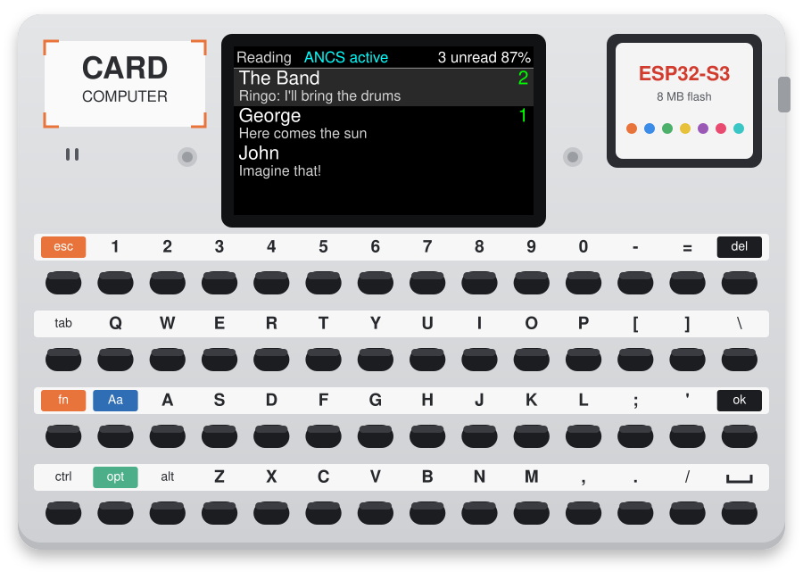

Tasca
Keep your iPhone in your pocket: WhatsApp notifications, music controls and Find iPhone on the M5Stack Cardputer v1.1.
Before you start
- Use Chrome or Edge on a computer (Windows, macOS or Linux). Safari, Firefox and phones cannot talk to USB devices.
- Connect the Cardputer v1.1 with a USB-C data cable and switch it on.
- Installing replaces whatever runs on the Cardputer now, and erases a previous Tasca pairing.
Install
Click the button, pick the Cardputer in the list (usually "USB JTAG/serial debug unit"), then confirm. It takes about a minute.
If the Cardputer is not in the list
Put it in download mode: unplug it, hold the G0 button on its side while plugging the cable back in, then click Install again. In download mode the screen stays dark: press the reset button once the install is done.
Then, on the iPhone
- Settings > Bluetooth > select Tasca. No PIN is needed.
- Accept the request to share notifications, or turn on "Share System Notifications" under the (i) next to Tasca.
- Set WhatsApp previews to "Always".
The full guide, keys and troubleshooting are in the README. Firmware files for manual install are on the releases page.